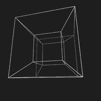
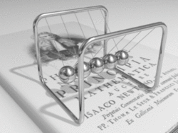

¿Qué es la Física?
La física, que proviene del latín physica y este del griego antiguo φυσικός (natural o relativo a la naturaleza) es una ciencia natural que se encarga del estudio de la energía, la materia y el espacio-tiempo, así como las interacciones de estos tres conceptos entre sí.
La física posiblemente es la ciencia más antigua, ya que la astronomía es una de sus subdisciplinas. En los últimos dos milenios, la física fue considerada parte de lo que ahora llamamos filosofía, química y ciertas ramas de la matemática y la biología, pero durante la Revolución Científica en el siglo XVII surgió para convertirse en una ciencia moderna, única por derecho propio. Sin embargo, en algunas esferas como la física matemática y la química cuántica, los límites de la física siguen siendo difíciles de distinguir.
Esta disciplina incentiva competencias, métodos y una cultura científica que permiten comprender nuestro mundo físico y viviente, para luego actuar sobre él. Sus procesos cognitivos se han convertido en protagonistas del saber y hacer científico y tecnológico general, ayudando a conocer, teorizar, experimentar y evaluar actos dentro de diversos sistemas, clarificando causa y efecto en numerosos fenómenos. De esta manera, la física contribuye a la conservación y preservación de recursos, facilitando la toma de conciencia y la participación efectiva y sostenida de la sociedad en la resolución de sus propios problemas.
La física es significativa e influyente, no solo debido a que los avances en la comprensión a menudo se han traducido en nuevas tecnologías, sino también a que las nuevas ideas en la física resuenan con las demás ciencias, las matemáticas y la filosofía.
La física no es sólo una ciencia teórica; es también una ciencia experimental. Como toda ciencia, busca que sus conclusiones puedan ser verificables mediante experimentos y que la teoría pueda realizar predicciones de experimentos futuros basados en observaciones previas. Dada la amplitud del campo de estudio de la física, así como su desarrollo histórico con relación a otras ciencias, se la puede considerar la ciencia fundamental o central, ya que incluye dentro de su campo de estudio a la química, la biología y la electrónica, además de explicar sus fenómenos.
La física, en su intento de describir los fenómenos naturales con exactitud y veracidad, ha llegado a límites impensables: el conocimiento actual abarca desde la descripción de partículas fundamentales microscópica hasta el nacimiento de las estrellas en el universo e incluso el poder conocer con una gran probabilidad lo que aconteció en los primeros instantes del nacimiento de nuestro universo, por citar unos pocos campos.
Esta tarea comenzó hace más de dos mil años con los primeros trabajos de filósofos griegos como Demócrito, Eratóstenes, Aristarco, Epicuro o Aristóteles, y fue continuada después por científicos como Galileo Galilei, Isaac Newton, Leonhard Euler, Joseph-Louis de Lagrange, Michael Faraday, William Rowan Hamilton, Rudolf Clausius, James Clerk Maxwell, Hendrik Antoon Lorentz, Albert Einstein, Niels Bohr, Max Planck, Werner Heisenberg, Paul Dirac, Richard Feynman, Stephen Hawking, Edward Witten, entre muchos otros.
Wikipedia